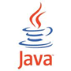

Java编程语言
Java是一门面向对象编程语言，不仅吸收了C/C++语言的各种优点，还摒弃了C/C++里难以理解的多继承、指针等概念，因此Java语言具有功能强大和简单易用两个特征
Spring BootSpring 应用开发框架
Spring Boot 项目旨在简化创建产品级的 Spring 应用和服务。你可通过它来选择不同的 Spring 平台。可创建独立的 Java 应用和 Web 应用，同时提供了命令行工具来允许 'spring scripts'。
MyBatisJava 数据持久层框架
MyBatis的前身就是iBatis，是一个数据持久层(ORM)框架。 iBATIS一词来源于“internet”和“abatis”的组合，是一个基于Java的持久层框架。
MySQL数据库服务器
MySQL是一个开放源码的小型关联式数据库管理系统，开发者为瑞典MySQL AB公司。目前MySQL被广泛地应用在Internet上的中小型网站中。由于其体积小、速度快、总体拥有成本低，尤其是开放源码这一特点，许多中小型网站为了降低网站总体拥有成本而选择了MySQL作为网站数据库。
jQuery轻量级 JavaScript 框架
jQuery是一个快速，小型且功能丰富的JavaScript库。借助易于使用的API（可在多种浏览器中使用），它使HTML文档的遍历和操纵，事件处理，动画和Ajax等事情变得更加简单。
BootstrapWeb 前端 UI 框架
Bootstrap 是全球最流行的前端开源工具包，它支持 Sass 变量和 mixins、响应式网格系统、大量的预建组件和强大的 JavaScript 插件，助你快速设计和自定义响应式、移动设备优先的站点。
jsoupHTML 解析器
jsoup是一款Java的HTML解析器，可直接解析某个URL地址、HTML文本内容。它提供了一套非常省力的API，可通过DOM、CSS以及类似于JQuery的操作方法来取出和操作数据。
ThymeleafHTML5 模板引擎
Thymeleaf是一个XML/XHTML/HTML5模板引擎，可用于Web与非Web环境中的应用开发。它是一个开源的Java库，基于Apache License 2.0许可，由Daniel Fernández创建，该作者还是Java加密库Jasypt的作者。
Ueditor富文本编辑器
UEditor是由百度web前端研发部开发所见即所得富文本web编辑器，具有轻量、可定制、注重用户体验等特点。 主要特点： 轻量级：代码精简，加载迅速。 定制化： 全新的分层理念，满足多元化的需求。
JavaScript即时编译型编程语言
JavaScript（简称“JS”） 是一种具有函数优先的轻量级，解释型或即时编译型的编程语言。虽然它是作为开发Web页面的脚本语言而出名，但是它也被用到了很多非浏览器环境中，JavaScript 基于原型编程、多范式的动态脚本语言，并且支持面向对象、命令式、声明式、函数式编程范式。